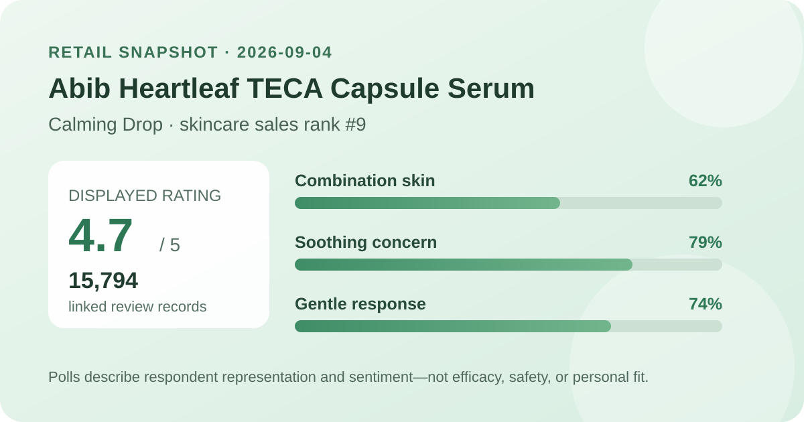
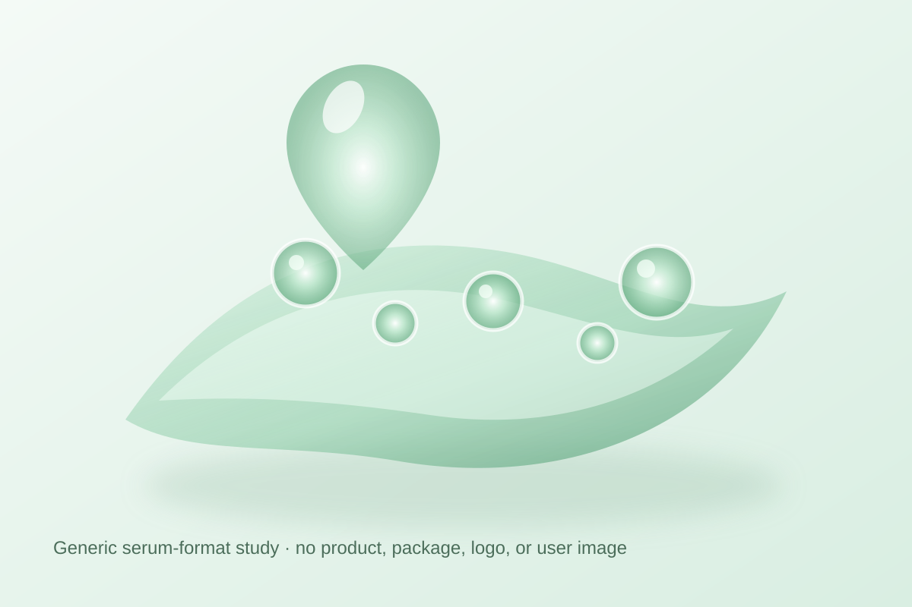

Data captured September 4, 2026. This article uses only the retailer's displayed product title, skincare sales rank, aggregate rating, review count, survey shares, and dated pack and price display. No individual review, reviewer name, product photograph, or user photograph is reproduced or translated. I did not test the product.

The short version: the promotional Abib Heartleaf TECA Capsule Serum Calming Drop listing ranked ninth in the captured Olive Young Korea skincare sales list and displayed 4.7 out of 5 from 15,794 review records. Its survey panel showed combination skin 62%, soothing concern 79%, and a gentle response at 74%. These are storefront feedback signals, not proof that the serum calms a skin condition, reduces redness, prevents blemishes, or suits every user.
The narrow conclusion is favorable: within this retailer's rating system, 15,794 linked records produced a one-decimal display of 4.7 on capture day. That is a large retail feedback pool and is enough to describe the direction of sentiment inside this listing as strongly positive. It does not reveal what every reviewer expected, how consistently the product was used, or whether every linked record concerns the exact double promotion now displayed.
The page did not expose a trustworthy five-, four-, three-, two-, and one-star breakdown. Several different distributions can round to the same 4.7 average, and the one-decimal display hides additional precision. I therefore do not invent a five-star share or reverse-engineer missing buckets. The value is also a dated snapshot; later reviews, listing mergers, or retailer adjustments can move the count and average.
Review volume limits the influence of any single score, but it does not remove selection effects. The pool comes from shoppers linked to one retailer who chose to leave feedback. Scores may reflect value, delivery, packaging, incentives, expectations, option changes, or product experience. A large commerce sample is still not a controlled trial and is not guaranteed to represent everyone considering a calming serum.
This was the leading displayed skin-type response. It describes representation, not a combination-skin performance score.
This identifies the leading concern response. It is not a measurement of calming, redness reduction, or recovery.
This is a subjective aggregate response, not an irritation test, safety assessment, or guarantee for reactive skin.
The three percentages answer separate questions, so they should not be added or averaged. The retailer did not display a distinct denominator for each survey. There is no basis for assuming all 15,794 linked records answered every prompt, or that the leading percentage shows the full distribution of alternatives.
Combination skin at 62% says that group led the captured skin-type poll; it does not prove the serum performs better for combination skin. The 79% concern share describes what respondents selected, not an observed outcome. The 74% gentle response is useful as sentiment context, but personal tolerance can vary with allergies, current skin condition, amount, frequency, and the rest of a routine.

The retailer categorizes the item as a serum, but I did not open, smell, spread, or layer it. Viscosity, slip, absorption time, finish, residue, scent, pilling, and compatibility with sunscreen or makeup remain unknown here. The local illustration communicates only a generic translucent capsule-serum format and deliberately avoids copying the product images, package design, logo, character artwork, or user photographs.
The word “capsule” in a retail name does not establish what the suspended material is, how it behaves on skin, or how much to use. Follow the directions and ingredient label on the actual market-specific package. Introducing one product at a time may make an unwanted change easier to identify, but that practice cannot guarantee safety or compatibility.
The English working name closely translates the Korean listing. “Heartleaf,” “TECA,” “capsule,” and “calming drop” are parts of the retail product identity and positioning; they are not standardized measures of ingredient amount, delivery, penetration, or outcome. A high rating does not validate those marketing ideas. The review panel did not measure redness, lesion count, barrier function, discomfort, hydration, or another clinical endpoint.
No heartleaf percentage, TECA amount, active threshold, encapsulation specification, or ingredient concentration is inferred from the title or its placement in retailer copy. Product naming, diagrams, price, popularity, and review surveys cannot substitute for the complete current ingredient label or a study report. A similarly named Abib item in another market may differ in bundle, packaging, label, seller, or formula, so confirm the exact item being considered.
Rank nine means this promotional listing had strong current sales momentum inside Olive Young Korea's skincare ranking at one moment on September 4. It does not mean ninth-best serum, ninth-best product for sensitive skin, or a stronger formula than everything below it. The captured page showed an Olive Young promotion, a double set, character merchandise, a discount, coupons, delivery badges, and thousands of concurrent viewers. Those commerce conditions can influence buying velocity.
Rank and rating measure different things. Rank reflects recent retailer sales activity; rating summarizes feedback linked to the listing. Neither explains why someone purchased, why a score was chosen, or what happened after use. Ranking is useful here for selecting a timely product to audit, not for converting popularity into efficacy evidence.
The captured listing described a 50 ml double set with a spot patch and character case, with a ₩48,000 reference price and a ₩27,500 promotional display. The page also showed a ₩2,750-per-10-ml basis for the 100 ml set. These were storefront values on September 4, 2026, not permanent prices or a promise that the same option, gift, coupon, or stock status will remain available.
Before comparing value, confirm the selected option, total usable volume, gift availability, coupon rules, seller, delivery terms, expiry information, and final checkout total. A double set offers value only if it can be used appropriately. Packaging, authorized sellers, return rights, and regional labeling can differ outside Korea.
I did not independently capture and reconcile the complete current ingredient list across markets. This article therefore does not claim the serum is fragrance-free, alcohol-free, essential-oil-free, hypoallergenic, non-comedogenic, pregnancy-compatible, or appropriate for acne, eczema, rosacea, allergy, broken skin, or another medical concern. Read the exact package for the item received.
A 74% gentle response cannot rule out stinging, dryness, congestion, allergy, or another unwanted experience. When a known allergy, prescription, skin condition, pregnancy, or previous serious reaction makes the decision higher stakes, qualified medical guidance is more appropriate than a retail average. Stop using a product and seek appropriate advice if a concerning reaction develops.
Not necessarily. The page did not expose a reliable star-by-star distribution, and multiple distributions can round to 4.7.
No. Combination skin led the displayed poll at 62%, which describes respondents in that poll rather than comparative performance or guaranteed fit.
No. That was the leading displayed concern response, not an instrumental measurement, before-and-after result, or controlled comparison.
No. The retailer displayed a 74% gentle response without a separate denominator. It remains subjective and cannot predict individual tolerance.
No. This is a retail-data analysis, and firsthand texture, scent, layering, and wear remain unverified.
The dated aggregate fields were captured from the live Korean product listing. Retail displays can change after capture.
Bottom line: 4.7 from 15,794 records, a number-nine sales rank, and the three displayed poll leaders make this a timely, broadly favorable retail listing. The responsible conclusion stops there: the data does not establish ingredient concentration, calming performance, redness reduction, gentleness for an individual, or superiority over another serum.